Hands-on Lab : Backup and Restore using MySQL
Estimated time needed: 25 minutes
In this lab, you will learn how to use the MySQL command line interface (CLI) to create different types of backups of a database and restore the structure and data of a database with your created backups when needed.
Objectives
After completing this lab, you will be able to use the MySQL command line to:
- Perform a Logical Backup and Restore
- Perform Point-in-Time Backup and Restoration
- Perform a Physical Backup and Restore
Software Used in this Lab
In this lab, you will use MySQL. MySQL is a Relational Database Management System (RDBMS) designed to efficiently store, manipulate, and retrieve data.

To complete this lab you will utilize the MySQL relational database service available as part of the IBM Skills Network Labs (SN Labs) Cloud IDE. SN Labs is a virtual lab environment used in this course.
Database Used in this Lab
The World database used in this lab comes from the following source: https://dev.mysql.com/doc/world-setup/en/ under CC BY 4.0 License with Copyright 2021 - Statistics Finland.
You will use a modified version of the database for the lab, so to follow the lab instructions successfully please use the database provided with the lab, rather than the database from the original source.
The following ERD diagram shows the schema of the World database:

The first row is the table name, the second is the primary key, and the remaining items are any additional attributes.
Exercises
This lab is divided into two exercises: an Example Exercise and Practice Exercise.
Example Exercise A: Perform a Logical Backup and Restore
In this example exercise, you will go through an example covering how to perform a logical backup and restoration of a database table.
A logical backup creates a file containing DDL (such as create table) and DML commands (such as insert) that recreate the objects and data in the database. As such, you can use this file to recreate the database on the same or on another system. Generally, when you perform a logical backup and restore, you reclaim any wasted space from the original database since the restoration process creates a clean version of the tables. Logical backups enable you to backup granular objects. For example, you can back up an individual database table, however, you cannot use it to backup log files or database configuration settings. Suppose you are in a situation where you dropped one or more tables of a database accidentally. This is where you make use of the logical backup of a database table to restore the structure and data of the table.
-
Go to Skills Network Toolbox by clicking the icon shown below from the side by side launched Cloud IDE.
-
From the Databases drop down menu, click MySQL to open the MySQL service session tab.
-
Click the Start button and wait until MySQL service session gets launched.
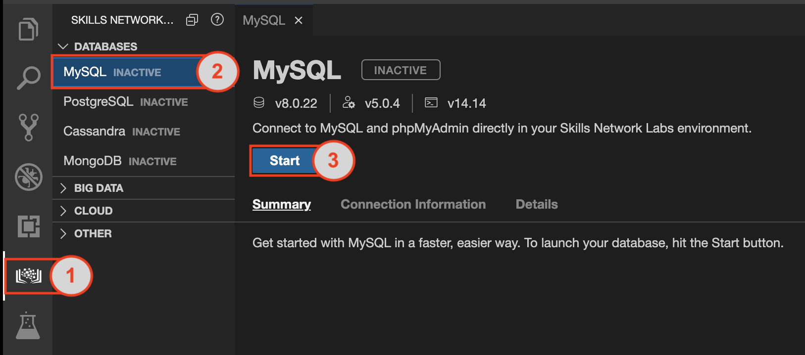
The MySQL server will take a few moments to start. Once it is ready, you will see the green "Active" label near the top of the window.

- NOTE: Whenever you are required to enter your MySQL service session password from the MySQL service session tab at any step of the lab, copy the password by clicking on the small copy button on the right of the password block. Paste the password into the terminal using Ctrl + V (Mac: ⌘ + V), and press Enter on the keyboard. For security reasons, you will not see the password as it is entered on the terminal.
-
Click New Terminal button from the mysql service session tab. Now you need to fetch two mysql script files to the Cloud IDE user session storage. Copy the command below by clicking on the little copy button on the bottom right of the codeblock. Then paste it into the terminal at the command line prompt using Ctrl + V (Mac: ⌘ + V), and Enter on keyboard. Do this for each of the commands below one at a time.
-
world_mysql_script.sql
wget https://cf-courses-data.s3.us.cloud-object-storage.appdomain.cloud/IBM-DB0231EN-SkillsNetwork/datasets/World/world_mysql_script.sql
-
world_mysql_update_A.sql
wget https://cf-courses-data.s3.us.cloud-object-storage.appdomain.cloud/IBM-DB0231EN-SkillsNetwork/datasets/World/world_mysql_update_A.sql
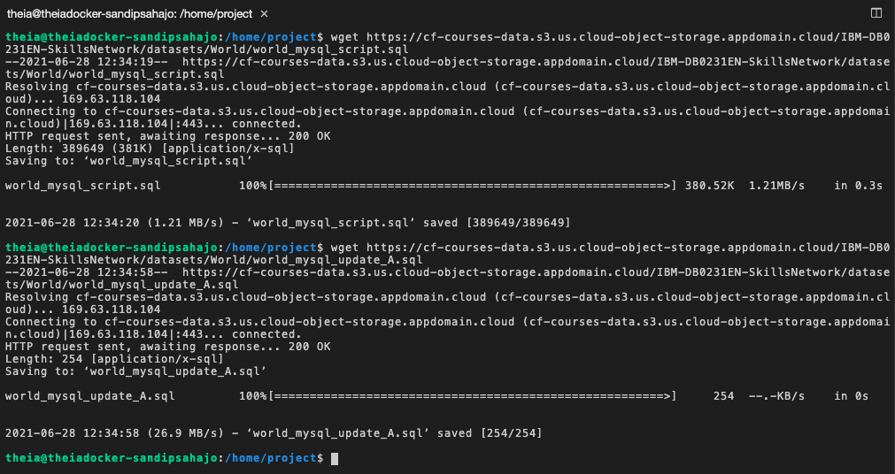
-
Initiate a mysql command prompt session by clicking the MySQL CLI button from the mysql service session tab.
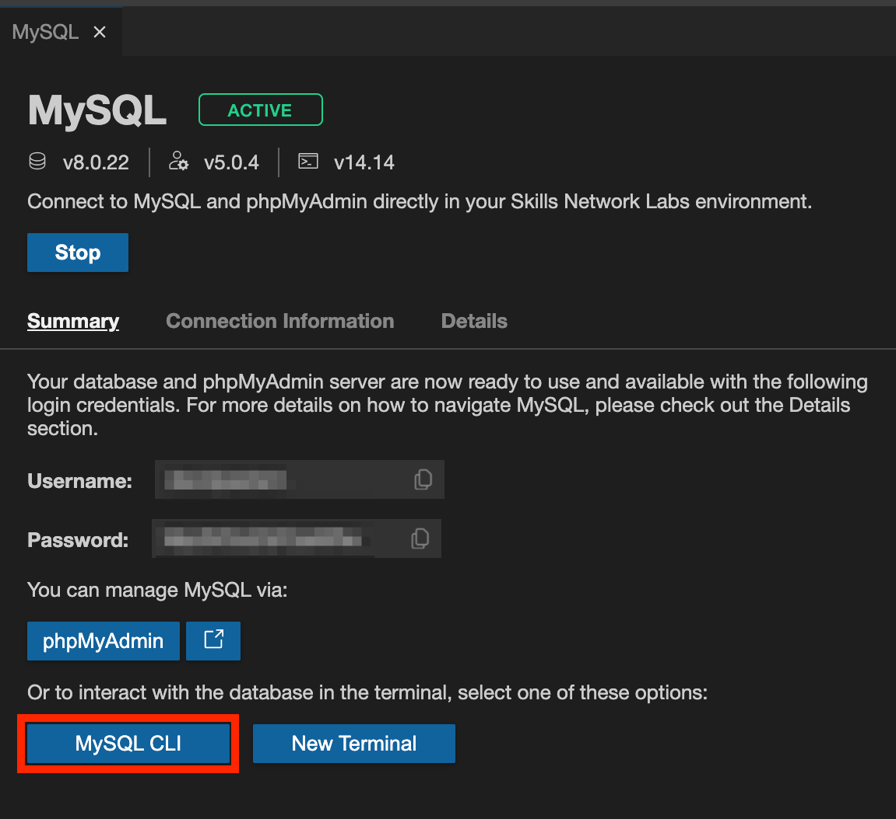
-
Create a new database world using the command below in the terminal:
CREATE DATABASE world;

-
To use the newly created world database, use the command below in the terminal:
USE world
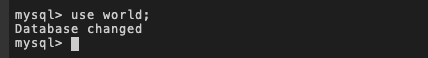
-
Execute the world mysql script (world_mysql.sql) to complete the world database creation process using the command below in the terminal:
SOURCE world_mysql_script.sql
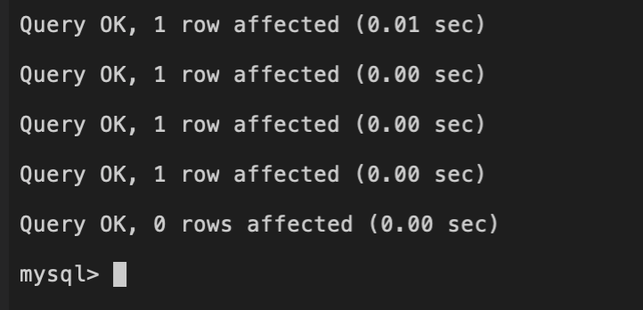
-
To list all the table names from the world database, use the command below in the terminal:
SHOW TABLES;
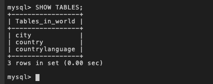
-
Retrieve all the Canada (countrycode='CAN') related records from the countrylanguage table using the command below in the terminal:
SELECT * FROM countrylanguage WHERE countrycode='CAN'
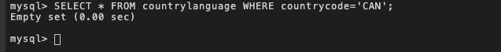
-
You will observe the returned result set is empty set. This means Canada related records are currently absent from the table. Run the update script (world_mysql_update_A.sql) to insert the records you were looking for.
SOURCE world_mysql_update_A.sql
-
Now redo step-9 to verify.
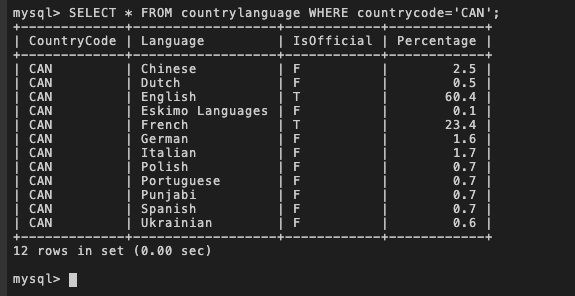
-
Quit the MySQL command prompt session using the command below in the terminal:
\q
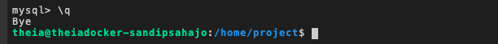
-
Now backup the countrylanguage table of the world database using the command below in the terminal (enter your MySQL service session password from the MySQL service session tab if necessary):
mysqldump --host=127.0.0.1 --port=3306 --user=root --password world countrylanguage > world_countrylanguage_mysql_backup.sql

-
To view the contents of the backup file within the terminal, use the command below:
cat world_countrylanguage_mysql_backup.sql
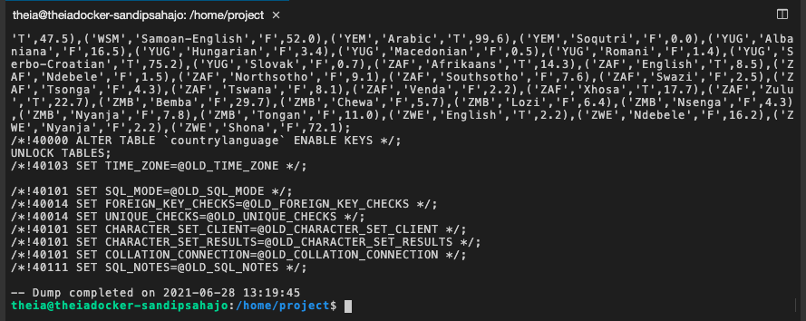
-
Run the command below in the terminal (enter your MySQL service session password from the MySQL service session tab if necessary):
mysql --host=127.0.0.1 --port=3306 --user=root --password --execute="DROP TABLE world.countrylanguage;"
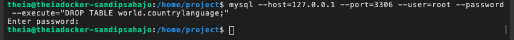
-
To list all the table names from the world database, use the command below in the terminal (enter your MySQL service session password from the MySQL service session tab if necessary):
mysql --host=127.0.0.1 --port=3306 --user=root --password --execute="SHOW TABLES FROM world;"
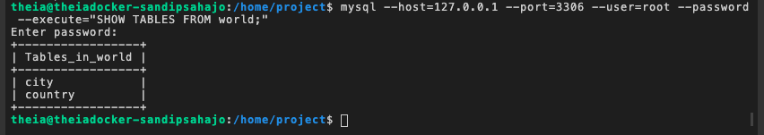
-
You will observe the table countrylanguage is missing from the world database. Now you are in the situation where you dropped a table of a database accidentally. This is where you will make use of the backup of the database table (you created backup world_countrylanguage_mysql_backup.sql) to restore the structure and data of the table.
-
To restore the structure and data of the table countrylanguage, use the command below in the terminal (enter your MySQL service session password from the MySQL service session tab if necessary):
mysql --host=127.0.0.1 --port=3306 --user=root --password world < world_countrylanguage_mysql_backup.sql
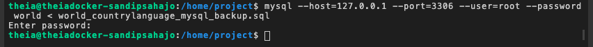
-
Now redo step-17 to verify.
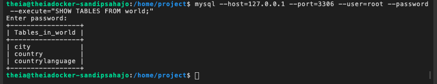
-
Again retrieve all the Canada (countrycode='CAN') related records from the countrylanguage table using the command below in the terminal (enter your MySQL service session password from the MySQL service session tab if necessary):
mysql --host=127.0.0.1 --port=3306 --user=root --password --execute="SELECT * FROM world.countrylanguage WHERE countrycode='CAN';"
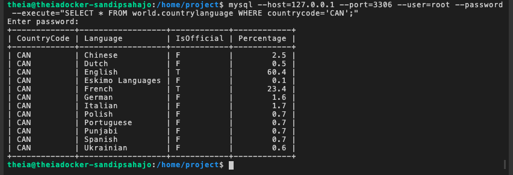
Example Exercise B: Perform Point-in-Time Backup and Restore
In this example exercise, you will go through an example on how to perform a point-in-time backup and restore of a database.
Say you have a full logical backup of your whole database in your last mysqldump file as of yesterday evening. However, several changes may have been made (including data loss) since then. Using point-in-time backup and restore, you can get each and every change that occurred since then, so that even after your last logical backup you have a record of all new transactions. Point-in-time backup is the set of binary log files generated subsequent to a logical backup operation of a database. The binary log files contain events that describe database changes such as table creation operations or changes to table data. To restore a database to a point-in-time, you will be using binary log files containing changes of a database for a time interval along with the last logical backup of the database.
-
Click New Terminal button from the mysql service session tab.
-
Now you need to fetch a mysql script file to the Cloud IDE user session storage. Copy the command below by clicking on the little copy button on the bottom right of the codeblock. Then paste it into the terminal at the command line prompt using Ctrl + V (Mac: ⌘ + V), and Enter on keyboard.
-
First create a full logical backup of the current state of your whole world database. Use the command below in the terminal (enter your MySQL service session password from the MySQL service session tab if necessary):
--... -- -- -- --- ---- -- > .
- NOTE: The two parameters in the command above,
--flush-logs (starts writing to a new binlog file) and --delete-master-logs (removes old binlog files) ensures that there will be only binary log files created after a full logical backup.
-
Initiate a mysql command prompt session by clicking the MySQL CLI button from the mysql service session tab.
-
To use the already created world database of example exercise A, use the command below in the terminal:
use world
-
List all the table names from the world database using the command below in the terminal:
SHOW TABLES;
-
Retrieve all the Canada (countrycode='CAN') related records from the city table using the command below in the terminal:
SELECT * FROM city WHERE countrycode='CAN'
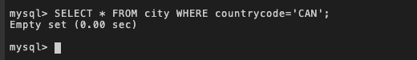
-
You will observe the returned result set is empty set. This means Canada related records are currently absent from the table. Run the update script (world_mysql_update_B.sql) to insert the records you were looking for.
source world_mysql_update_B.sql
-
Now redo step-7 to verify.
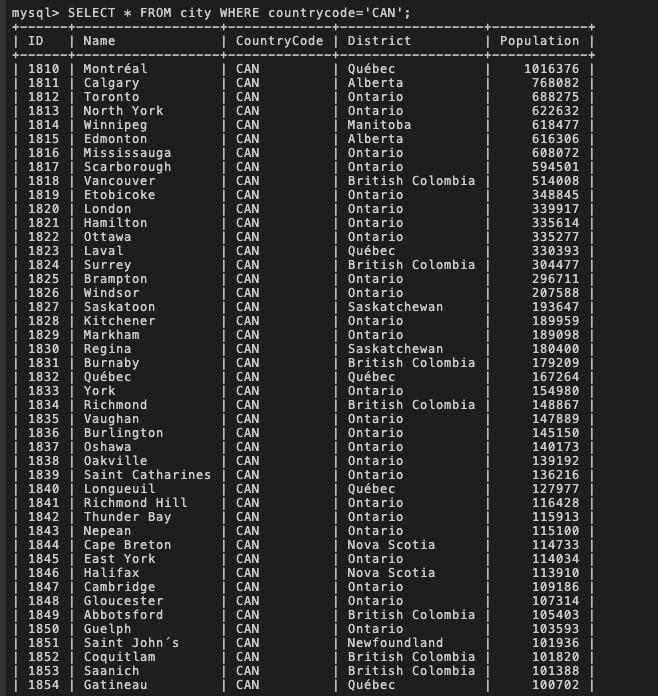
-
Quit the MySQL command prompt session using the command below in the terminal:
\q
-
Now you will create a scenario where a database crash will be conducted intentionally which will result a significant loss of your world database files. To create the scenario, copy the command below by clicking on the little copy button on the bottom right of the codeblock. Then paste it into the terminal at the command line prompt using Ctrl + V (Mac: ⌘ + V), and Enter on keyboard. Do this for each of the commands below one at a time.
docker exec mysql-mysql-1 rm -rf /var/lib/mysql/world
docker exec -it mysql-mysql-1 mysqladmin -p shutdown
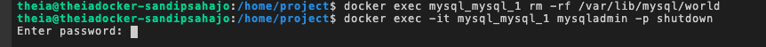
-
Try to retrieve records from any table of the database using like the command below in the terminal (enter your MySQL service session password from the MySQL service session tab if necessary):
mysql --host=127.0.0.1 --port=3306 --user=root --password --execute="SELECT * FROM world.city;"
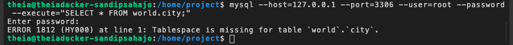
-
You will face errors since a significant loss of your world database files happened. Now you have to restore the world database along with the updates you made earlier in this exercise running the update script (world_mysql_update_B.sql). Display the binary logs using the command below in the terminal (enter your MySQL service session password from the MySQL service session tab if necessary):
mysql --host=127.0.0.1 --port=3306 --user=root --password --execute="SHOW BINARY LOGS;"
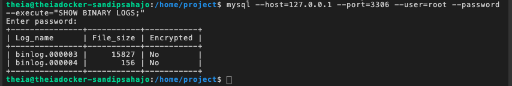
-
Write the contents of all binary log files listed above to a single file using the command below in the terminal:
docker exec mysql-mysql-1 mysqlbinlog /var/lib/mysql/binlog.000003 /var/lib/mysql/binlog.000004 > logfile.sql
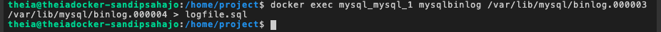
-
You are ready to perform point-in-time restore. First restore the full logical backup of your whole world database you created earlier in this exercise using the command below in the terminal (enter your MySQL service session password from the MySQL service session tab if necessary):
mysql --host=127.0.0.1 --port=3306 --user=root --password < world_mysql_full_backup.sql
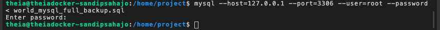
-
To verify if you have the updates from the update script (world_mysql_update_B.sql), retrieve all the Canada (countrycode='CAN') related records from the city table using the command below in the terminal (enter your MySQL service session password from the MySQL service session tab if necessary):
mysql --host=127.0.0.1 --port=3306 --user=root --password --execute="SELECT * FROM world.city WHERE countrycode='CAN';"
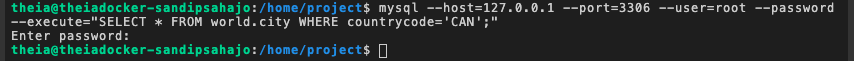
-
Now run the logfile you created in step-14 using the command below in the terminal (enter your MySQL service session password from the MySQL service session tab if necessary):
mysql --host=127.0.0.1 --port=3306 --user=root --password < logfile.sql
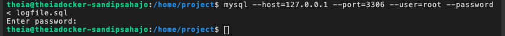
-
Redo step-16 to verify if you have the updates from the update script (world_mysql_update_B.sql).
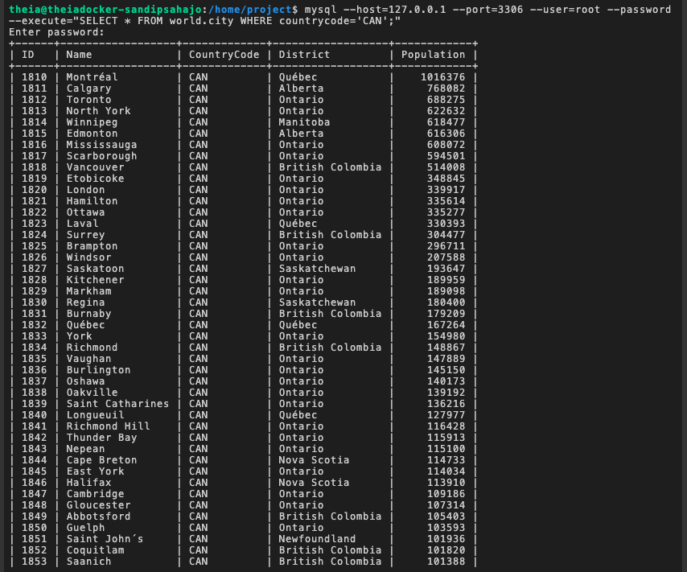
-
Finally through the point-in-time recovery, you have the world database in the same state before you conducted the intentional crash scenario.
Example Exercise C: Perform Physical Backup and Restore
In this example exercise, you will go through an example on how to perform a physical backup and restore of a database.
A physical or raw backup creates a copy of all the physical storage files and directories that belong to a table, database, or other object, including the data files, configuration files, and log files. Physical backups are often smaller and quicker than logical backups, so are useful for large or important databases that require fast recovery times. You will be performing a storage level snapshots as physical backup. This method is common for databases utilizing specialized cloud storage systems like the one you are using for this lab provide by the Skills Network Labs.
-
Click New Terminal button from the mysql service session tab.
-
To perform physical backup, you will take a storage snapshot of your MySQL server data directory within the docker container of the Skills Network Labs specialized cloud system. Then copy that to your Cloud IDE user session storage. Use the command below in the terminal:
docker cp mysql-mysql-1:/var/lib/mysql /home/project/mysql_backup

TIPS: Say instead of taking snapshot of the whole MySQL server data directory which may contain several databases, you want to take snapshot of your specific world database for physical backup. The command for that should look like: docker cp mysql-mysql-1:/var/lib/mysql/world /home/project/mysql_world_backup
-
Click the Explorer icon as shown below in the Cloud IDE to access the user session storage. mysql_backup folder will appear which you created as physical backup in step-2. You can click the folder to explore the contents of the created physical backup.
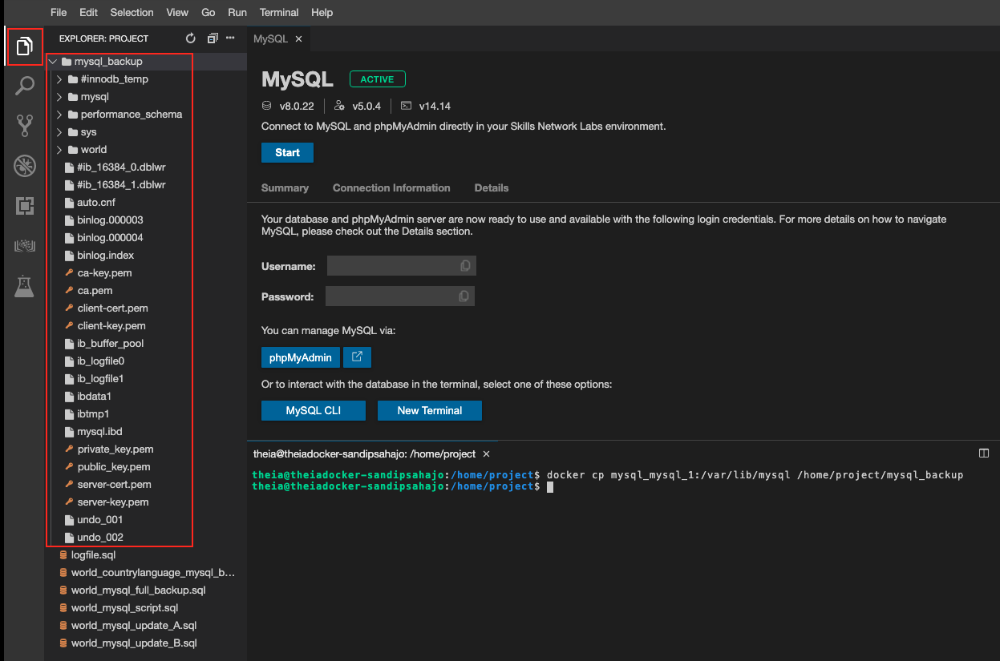
-
When needed, you can restore the physical backup using the command below in the terminal:
docker cp /home/project/mysql_backup/. mysql-mysql-1:/var/lib/mysql
NOTE: For this exercise, you don't need to run this command.
Practice Exercise 1: Perform Logical Backup and Restore
In this practice exercise, you will practice performing a logical backup and restore of a database table.
Scenario: You are planning to update and migrate one of the tables from your world database to a new MySQL server. Perform a logical backup of the table city from the database world. The backup table is expected to contain data of Bangladesh. Validate if your created backup is in working state.
Hint (Click Here)
- Create a new database with any name like world_P1.
- Use world_mysql_script.sql script to complete the world_P1 database creation process.
- Try to retrieve all the records with BGD countrycode from the city table.
- If you fail, try updating the database using world_mysql_update_1.sql(https://cf-courses-data.s3.us.cloud-object-storage.appdomain.cloud/IBM-DB0231EN-SkillsNetwork/datasets/World/world_mysql_update_1.sql) script.
- Perform a logical backup of the city table.
- Drop the city table and try to restore it with the backup you created to validate if your created backup is in working state.
Solution (Click Here)
-
Fetch the necessary scripts files to the Cloud IDE user session storage using Cloud IDE Terminal.
-
world_mysql_script.sql
wget https://cf-courses-data.s3.us.cloud-object-storage.appdomain.cloud/IBM-DB0231EN-SkillsNetwork/datasets/World/world_mysql_script.sql
-
world_mysql_update_1.sql
wget https://cf-courses-data.s3.us.cloud-object-storage.appdomain.cloud/IBM-DB0231EN-SkillsNetwork/datasets/World/world_mysql_update_1.sql
-
Create a new database with any name like world_P1 using MySQL CLI.
create database world_P1;
use world_P1
-
Use world_mysql_script.sql script to complete the world_P1 database creation process.
source world_mysql_script.sql
-
Try to retrieve all the records with BGD countrycode from the city table.
SELECT * FROM city WHERE countrycode='BGD'
-
If you fail, try updating the database using world_mysql_update_1.sql script.
source world_mysql_update_1.sql
SELECT * FROM city WHERE countrycode='BGD'
-
Perform a logical backup of the city table.
\q
mysqldump --host=127.0.0.1 --port=3306 --user=root --password world_P1 city > world_P1_city_mysql_backup.sql
-
Drop the city table and try to restore it with the backup you created to validate if your created backup is in working state.
mysql --host=127.0.0.1 --port=3306 --user=root --password --execute="DROP TABLE world_P1.city;"
mysql --host=127.0.0.1 --port=3306 --user=root --password --execute="SELECT * FROM world_P1.city;"
mysql --host=127.0.0.1 --port=3306 --user=root --password world_P1 < world_P1_city_mysql_backup.sql
mysql --host=127.0.0.1 --port=3306 --user=root --password --execute="SELECT * FROM world_P1.city;"
Practice Exercise 2: Perform Physical Backup and Restore
In this practice exercise, you will practice performing a physical backup and restore of a database table.
Scenario: Perform a physical backup of the database world. The backup database is expected to contain data of Canada as well as Bangladesh.
Hint (Click Here)
- Create a new database with any name like world_P2.
- Use world_mysql_script.sql script to complete the world_P2 database creation process.
- Try to retrieve all the records with BGD as well as CAN countrycodes from all the tables.
- If you fail, try updating the database using world_mysql_update_2.sql(https://cf-courses-data.s3.us.cloud-object-storage.appdomain.cloud/IBM-DB0231EN-SkillsNetwork/datasets/World/world_mysql_update_2.sql) script.
- Perform a physical backup of the database.
- Remove the world_P2 database directory from the mysql server docker container and try to restore it with the backup you created to validate if your created backup is in working state.
Solution (Click Here)
-
Fetch the necessary scripts files to the Cloud IDE user session storage using Cloud IDE Terminal.
-
world_mysql_script.sql
wget https://cf-courses-data.s3.us.cloud-object-storage.appdomain.cloud/IBM-DB0231EN-SkillsNetwork/datasets/World/world_mysql_script.sql
-
world_mysql_update_2.sql
wget https://cf-courses-data.s3.us.cloud-object-storage.appdomain.cloud/IBM-DB0231EN-SkillsNetwork/datasets/World/world_mysql_update_2.sql
-
Create a new database with any name like world_P2 using MySQL CLI.
create database world_P2;
use world_P2
-
Use world_mysql_script.sql script to complete the world_P2 database creation process.
source world_mysql_script.sql
-
Try to retrieve all the records with BGD and CAN countrycode from all the tables.
SELECT * FROM country WHERE code in ('BGD','CAN');
SELECT * FROM countrylanguage WHERE countrycode in ('BGD','CAN');
SELECT * FROM city WHERE countrycode in ('BGD','CAN');
-
If you fail, try updating the database using world_mysql_update_2.sql script. Then redo the previous step to validate.
source world_mysql_update_2.sql
-
Perform a physical backup of the database.
\q
docker cp mysql-mysql-1:/var/lib/mysql/world_P2 /home/project/mysql_world_P2_backup
-
Remove the world_P2 database directory from the mysql server docker container and try to restore it with the backup you created to validate if your created backup is in working state.
docker exec mysql-mysql-1 rm -rf /var/lib/mysql/world_P2
docker exec -it mysql-mysql-1 mysqladmin -p shutdown
NOTE: The above command restarts the mysql server which is necessary after making changes to the mysql server data directory.
mysql --host=127.0.0.1 --port=3306 --user=root --password --execute="SELECT * FROM world_P2.city;"
docker cp /home/project/mysql_world_P2_backup/. mysql-mysql-1:/var/lib/mysql/world_P2
docker exec -it mysql-mysql-1 mysqladmin -p shutdown
NOTE: The above command restarts the mysql server which is necessary after making changes to the mysql server data directory.
mysql --host=127.0.0.1 --port=3306 --user=root --password --execute="SELECT * FROM world_P2.city;"
Congratulations! You have completed this lab, and you are ready for the next topic.
Author(s)
Other Contributor(s)
Changelog
| Date |
Version |
Changed by |
Change Description |
| 2021-06-15 |
1.0 |
Sandip Saha Joy |
Created initial version |
| 2021-10-04 |
1.1 |
David Pasternak |
Updated screenshots |
| 2022-07-12 |
1.2 |
Lakshmi Holla |
Updated html tag |
© IBM Corporation 2021. All rights reserved.